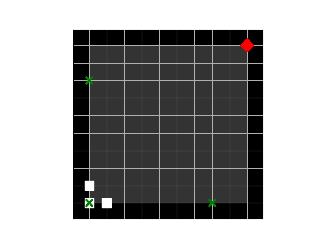
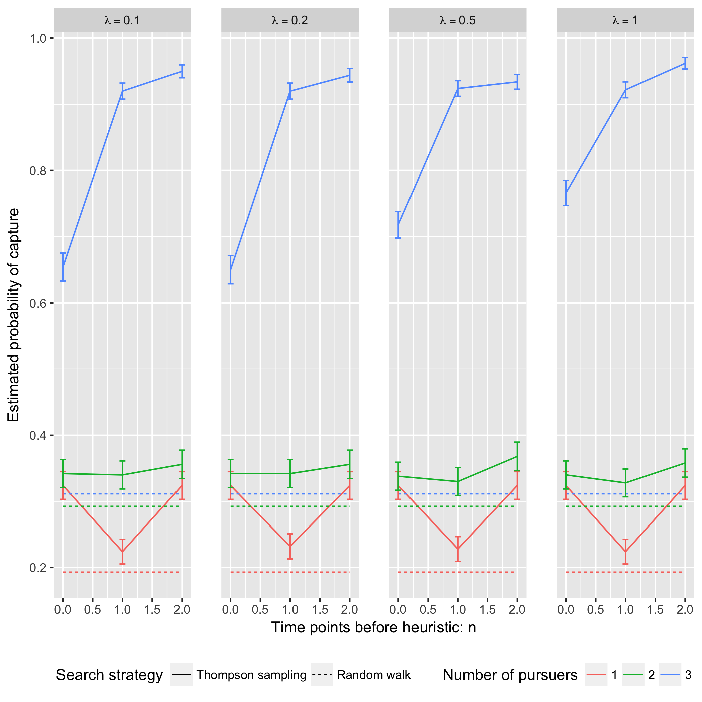

Cooperative search strategies for pursuing adversarial evaders
Nicholas J. Meyer
Joint work with:
- Dr. Alyson Wilson (NCSU, CNEC)
- Dr. Eric Laber (NCSU)
- Nick Kapur (NCSU)
- Dr. Robert Brigantic (PNNL)
- Dr. Samrat Chatterjee (PNNL)
- Casey Perkins (PNNL)
Motivating problems
- National security
- Domestic invasion
- Search and destroy missions
- Emergency response
- Law enforcement responding to a fleeing suspect
- Wildlife management
- Tracking poachers of endangered animals
Pursuit and Evasion
- Formalize the search as evolving over a network of locations
- All players move in discrete time
- Possible objectives
- Evader tries to reach goal and pursuers try to stop the evader
- Pursuers try to catch evader and game continues until capture
Pursuit and Evasion Demo

Game Setup
- \(d\) pursuers
- 1 evader
- \(\lbrace 1, \ldots, L \rbrace\) nodes in the network
- Order of events
- Pursuers gather and share state information
- Pursuers move to new locations
- Evader responds by moving to a new location
- Game terminates when the evader has been caught or a finite time
horizon has been reached
- The evader is caught if adjacent to at least one pursuer
- Could be terminated after evader completes objective
Pursuers
- Goal: Minimize expected time to capture
- State information available to all pursuers at each time point
- Locations of all pursuers
- Indicator for whether or not evader has been caught
- Information from informants and reliability of the source
- Reliable, deceitful, noisy
- Assume complete communication
- New Locations are restricted to a feasible set
- E.g., can only move to adjacent locations
- An action is a set of new locations for each agent
Evader
- Goal: Avoid being caught by pursuers
- Only one evader
- Movements restricted to feasible set (e.g., adjacent locations)
Timeline

Player Strategies
- Pursuers
- Define \(H^t\) to be all current and past state information at time \(t\)
- \(R^t\): Reward for the pursuers at time \(t\)
- \(\pi = \lbrace \pi^0,\ldots,\pi^{T-1}\rbrace\): Strategy for
all \(d\) pursuers
- \(\pi^t\): Maps \(H^t\) to the set of feasible next locations
- Evader:
- \(\psi = \lbrace \psi^0, \ldots, \psi^{T-1}\rbrace\): Strategy for the evader
- \(\psi^t\): Maps current location to the set of feasible next locations
Optimal Pursuer Strategies
- Value of the pursuer strategy \(\pi\) assuming evader follows \(\psi\) \[V(\pi; \psi) \triangleq \mathbb{E}^{\pi, \psi}\left( \sum_{t=1}^T R^t\right) \] where \(\mathbb{E}^{\pi, \psi}\) denotes the expectation if pursuers follow \(\pi\) and the evader follows \(\psi\)
- Define \(G^t_\psi(\cdot | h^t)\) to be the posterior distribution of the evader's location given \(H^t = h^t\) and the evader is following \(\psi\).
- For any \(\pi\) \(\psi\), there exists a pursuer strategy \(\widetilde{\pi}\) depending on \(H^t\) through the current state and \(G^t_\psi(\cdot | H^t)\) such that \(V(\widetilde{\pi}, \psi) \ge V(\pi; \psi)\)
Thompson Sampling

Estimating Optimal Pursuer Strategy
- Q-function is a sufficient quantity for making optimal decisions \[Q^{*, \psi}(\boldsymbol{w}, \boldsymbol{J}, \boldsymbol{a}) = \mathbb{E}^{*, \psi}\left[\sum_{v\ge 0} \gamma^v R^{t + v} \bigg| \boldsymbol{W}^t = \boldsymbol{w}, \boldsymbol{J}^t = \boldsymbol{J}, \boldsymbol{A}^t = \boldsymbol{a}\right]\]
- Under the Markov assumption \[Q^{*, \psi}(\boldsymbol{w}, \boldsymbol{J}, \boldsymbol{a}) = \mathbb{E}^{*, \psi}\left[R^t + \gamma \max_{\boldsymbol{a}'} Q^{*, \psi}(\boldsymbol{W}^{t+1}, \boldsymbol{J}^{t+1}, \boldsymbol{a}') \bigg| \boldsymbol{W}^t = \boldsymbol{w}, \boldsymbol{J}^t = \boldsymbol{J}, \boldsymbol{A}^t = \boldsymbol{a}\right]\]
- Can write using a \(n\)-step roll out \[Q^{*, \psi}(\boldsymbol{w}, \boldsymbol{J}, \boldsymbol{a}) = \mathbb{E}^{*, \psi}\left[\sum_{v = 0}^{n-1} \gamma^v R^{t+v} + \gamma^{n} \max_{\boldsymbol{a}'} Q^{*, \psi}(\boldsymbol{W}^{t+n}, \boldsymbol{J}^{t+n}, \boldsymbol{a}') \bigg| \boldsymbol{W}^t = \boldsymbol{w}, \boldsymbol{J}^t = \boldsymbol{J}, \boldsymbol{A}^t = \boldsymbol{a}\right]\]
Heuristic Strategy
- Approximate Q-function using a heuristic strategy \[Q^{*, \psi}(\boldsymbol{w}, \boldsymbol{J}, \boldsymbol{a}) = \mathbb{E}^{*, \psi}\left[\sum_{v\ge 0} R^t + \gamma \max_{\boldsymbol{a}'} Q^{\pi_H, \psi}(\boldsymbol{W}^{t+1}, \boldsymbol{J}^{t+1}, \boldsymbol{a}') \bigg| \boldsymbol{W}^t = \boldsymbol{w}, \boldsymbol{J}^t = \boldsymbol{J}, \boldsymbol{A}^t = \boldsymbol{a}\right]\]
- Heuristic strategy \(\pi_H\) is a variant of the global-max
strategy
- Find locations of the posterior with highest coverage
- Select actions that move the pursuers closest to these locations
Simulation Experiment Setup
- Number of pursuers: 1, 2, 3
- Number of steps before heuristic: 0, 1, 2
- Game ends when evader reaches the goal state
- 50 Replications

Simulation Experiment Results

Future Work
- Estimate prior over evader behaviors using Nash process prior
- Intelligent evader that adapts over time
- Prioritization of capture zones
References
Thank you for listening!
Questions?